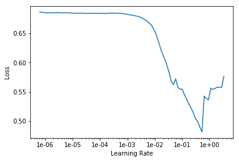
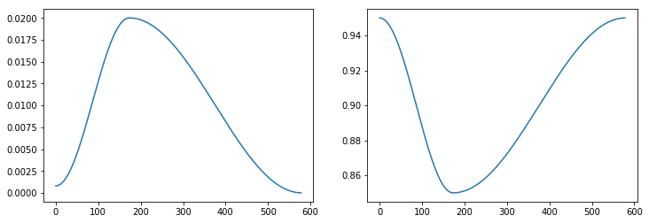

Callbacks
概要
本記事はfast.aiのwikiのCallbacksページの要約となります。
筆者の理解した範囲内で記載します。
公式ドキュメントには、
fastai's training loop is highly extensible, with a rich callback system.
とありますが、要は fast.aiのトレーニングループの中において、拡張性の高いcallbackシステムが組み込まれています。
Every callback that is passed to Learner with the callback_fns parameter will be automatically stored as an attribute.
仕組みとしては、Learnerにcallback_fnsとして引き渡された全てのcallbackは自動的に属性として呼び出すことができるようになっているらしい。
それでは、
- LrFinder
- OneCycleScheduler
- MixUpCallback
- CSVLogger
- SaveModelCallback
以上の5つの実例を見ていきましょう。
LrFinder
MNISTデータを用いる場合、
path = untar_data(URLs.MNIST_SAMPLE)
data = ImageDataBunch.from_folder(path)
def simple_learner(): return Learner(data, simple_cnn((3,16,16,2)), metrics=[accuracy])
learn = simple_learner()
learn.lr_find()
learn.recorder.plot()

Leslie Smith氏が考案なさったlearning rate finderを用いて最適な学習率を探し出すことができます。
この場合、グラフの谷底の少し後ろのlr = 2e-2が最適なLearning Rateだそう。（後日記事にて詳細を解説します。）
OneCycleScheduler
Leslie Smith氏の1cycle annealingを実装したもの。
learn.fit_one_cycle(3, lr)
learn.recorder.plot_lr(show_moms=True)

詳しくはこちらを参照。
要は、Learning Rate と Momentum を反比例してtrainingしていく感じだと思う。
MixUpCallback
learn = Learner(data, simple_cnn((3, 16, 16, 2)), metrics=[accuracy]).mixup()
Mixup: Beyond Empirical Risk Minimizationも同様に実装することができる。
CSVLogger
learn = Learner(data, simple_cnn((3, 16, 16, 2)), metrics=[accuracy, error_rate], callback_fns=[CSVLogger])
learn.fit(3)
learn.csv_logger.read_logged_file()
callback_fnsに[CSVLogger]を付けるだけでこんな簡単に結果をcsvに出力できる。
SaveModelCallback
learn = Learner(data, simple_cnn((3,16,16,2)), metrics=accuracy)
learn.fit_one_cycle(3,1e-4, callbacks=[SaveModelCallback(learn, every='epoch', monitor='accuracy')])
!ls ~/.fastai/data/mnist_sample/models
bestmodel_1.pth bestmodel_2.pth bestmodel_3.pth
こんな感じで毎epoch、もしくは最適なmodelを自動的に保存することができます！！すげえ！！
最後に
- 他にも面白いcallbacksがあったのでpart2で紹介できていければと思います。
- Learning Rate Finder や Mixup などの理論的背景を深掘りしていきたい。
- 自作のモデルのチュートリアルをやってみる。
最後に
間違いやご指摘などが御座いましたらご教示願います！